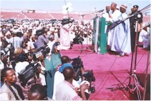

Time to stand up for Nigerian unity
Speech
delivered by His Excellency, the Executive Governor of Nasarawa State, Alhaji
Abdullahi Adamu, for and on behalf of Governor�s of the 19 Northern States at
�reception 2000� held in honour of His Excellency, the Vice-President,
Alhaji Atiku Abubakar at the Ahmadu Bello Stadium Kaduna on Saturday, November
18, 2000
Compliments.
We are gathered here to honour our illustrious
son, the vice-president of the Federal Republic of Nigeria, His Excellency,
Alhaji Atiku Abubakar. This historic event has been aptly titled Reception 2000. I am both privileged and honoured to have been
chosen by my dear brothers, the northern states governors, to deliver this
keynote address on their behalf. I accepted this rare honour with humility and
gratitude. On their behalf and indeed, on behalf of the entire people of the
northern states, I warmly welcome His Excellency, the vice-president, and all
our distinguished guests from every part of this great country to this very
important event.
We believe, as the saying goes, that honour
should be given to whom it is due. When the deserving are honoured, they feel
appreciated by their community and are encouraged to reach for even greater
heights. It also fires in others the ambition to excel in their various
endeavours. His Excellency, the vice-president, has earned his place in the hall
of achievers in our country as a role model in business and politics. He was a
star in the world of business. He is a star in politics. We are proud of him.
His credentials as a hard working, detribalized Nigerian, a committed
nationalist and patriot are solid and unassailable. Communities in various parts
of Nigeria have honoured him with traditional titles in appreciation of his
dedication to the cause and the sustenance of democracy in our country. During
the dark days of Nigeria�s recent political history, he suffered personal
privations in the hands of those who opposed his dogged struggle for the
democratic rights of all Nigerians. In spite of everything, he fearlessly fought
on without giving a thought to his personal pains because he was convinced that
his struggle was just. Our nation must forever remain grateful to him and people
like him who made great personal sacrifices for the enthronement of democracy.
We are now reaping its dividends from their sweat, toil and pain.
The price of democracy and liberty is eternal
vigilance and commitment. Events in various parts of the country today give the
impression that Nigerians are taking democracy for granted. In eighteen months
of democracy, the country has hardly known peace. It has been convulsed in a
resurgence of ethnicity and political intolerance. The evils we believed we had
buried long ago have jumped out of the bottle like the genie. In this very
delicate period of our democracy, the drums of ethnic disharmony are getting
ominously louder across the nation. They have become a major source of national
and international worry. The tribal champions claim that they are promoting the
interests and the rights of their tribes in a democracy but they are doing so at
the expense of other tribes. The rights of individuals in a democracy are not
absolute. They derive from a scrupulous respect for the rights of others. We
cannot enjoy our democratic rights without discharging our obligations, without
which these rights are meaningless. The destructive actions and provocative
pronouncements of the tribal champions have once again put Nigeria at cross
roads. Let no one have any illusions about the dire consequences for the nation
and its people. The violent ethnic cleansing perpetrated and perpetuated in the
south-west by the dangerous ethnic army known as Odua Peoples Congress, OPC,
were premeditated and form part of a grand plan by their sponsors to destabilize
Nigeria. That is why no notable
Yoruba leader has ever condemned them. Instead, they defend them even by lying
on their behalf. This is most unfortunate.
In the last eighteen months, there have been four
major unprovoked attacks against northerners in Shagamu and Lagos. Hundreds of
northerners were slaughtered in cold blood. Their properties were looted or
destroyed. Thousands of them are still refugees in makeshift refugee camps in
some parts of Lagos State. It is no secret that these killings of northerners by
OPC were approved and supported by leading political leaders from the south-west
who claim to be champions of democracy and national unity. The irony must be
lost on them.
We must call on all patriots to unreservedly condemn these wanton
killings. We call on those who sponsor these youths in their murderous and
misguided missions to put an end to the violent and criminal acts. The north and
its people have done nothing to deserve this outpouring of venom and hatred. We
have exercised tremendous restraint in the face of these premeditated attacks
and killings of our people. Our restraint must not be mistaken for weakness.
There is a limit to patience and tolerance. We have reached that limit. We are
compelled to warn that we cannot tolerate any more killings of our people. Let
the word go out from here and now that the north cannot take it any more. For
the avoidance of doubt, the north has the capacity to protect and shall protect
its own wherever they are in the country. Nigeria belongs to all of us. Our
constitution guarantees every Nigerian the right to live, work, and carry on a
legitimate business in any part of the country. The north cannot and will not
tolerate the abrogation of this right as it affects its people any where in the
country. No tribe or group of persons has a monopoly of violence.
We, in the north, remain unapologetically
committed to the unity and progress of Nigeria. We will continue to make all the
necessary sacrifices in furtherance of this commitment. Despite views to the
contrary, northerners have never claimed divine rights to the leadership of
Nigeria. It has never sought to use its numerical strength at the expense of the
political, economic or social rights of other Nigerians. Only two northerners
have ruled this country through the democratic process. That does not amount to
monopoly of power by the region. The north did not choose military rulers of
northern extraction. Their own military colleagues chose them. Essentially, they
represented those interests. All but two of the successful coups were staged by
northerners against northern civilian and military rulers.
The north championed, actualized and remains
committed to power shift in the democratic process with the election of the late
Chief Moshood Abiola in the famous June 12, 1993 presidential election. The
north rejected northern candidate in favour of a southern candidate. Chief
Abiola�s own people in the south-west rejected him. Yet southern political
revisionists insist the election was annulled because the north did not want
power shift. The same people who rejected Chief Olusegun Obasanjo as a
presidential candidate now claim him as their own. His election was God�s will
given expression through the overwhelming support of the north. Despite all
provocations, the north will continue to support the Nigerian nation as an
indivisible entity until when, and if, a new constitutional arrangement advises
otherwise.
In any case, the north shall not cry. Whatever
anyone may say, the incontestable fact remains that in the political equation of
this country, the north holds the ace. They who believe there can be Nigeria
without the north are merely idling away in the somnolent luxury of ignorance.
The north is a principal stakeholder in Nigeria. That is the fact of our
national life. No north, no Nigeria.
Some south-western political leaders regard the
north as a parasite on the Nigerian nation because it does not produce crude
oil, which, admittedly, is the mainstay of the Nigerian economy. The current
agitation by governors of oil-producing states to control their resources is
more or less a chorus of the views propagated by south-west to the effect that
the political subjugation of the north must begin with its economic
strangulation. Some governors of the south-west have similarly suggested that
each state should be allowed to collect and retain VAT within its territory.
Their argument is that since some states in the north introduced the Sharia
Muslim legal system which prohibits the sale of alcohol, they should not be
entitled to VAT paid on the sale of alcohol in other states of the federation.
In normal circumstances these puerile arguments
would be ignored as irrelevances but these agitations are part of a process of
indoctrination aimed at whipping up public sentiment against the north.
Columnists and publications that champion the south-west cause show very clearly
that this campaign is having the desired effect on the psyche of the generality
of their people.
The north does not produce crude oil but its
situation is no different from that of the south-west and most of the
south-east. We thank God for crude oil. However, the north does not need oil to
survive as an economic entity. Before the oil boom days, the defunct northern
region contributed handsomely to the national coffers through its mineral
resources such as tin, gold and columbite and its agricultural produce such as
groundnuts, cotton, and hides and skins. Oil wealth has destroyed agriculture
and fiscal discipline in our country, but the north is still the largest
producer of agricultural and animal produce in the country. The region has the
capacity to fully support itself and its development through the exploitation of
its mineral and agricultural resources.
We welcome the recent meeting of southern
governors hosted by the governor of Lagos, Alhaji Bola Tinubu. We encourage
meaningful social and political contacts across the nation. By their own
admission, however, the governors who were assembled at the instance of the
south-west, are merely ganging-up against the north. This is less than a noble
objective. Our democratic stability and development will benefit from a
cross-fertilization of ideas through various forums. We advise, however, that
such forums must have broad and noble objectives and not limited objectives
aimed at advancing a given set mind.
In the face of this new development, the
northerners need no one to tell them that the unity of former region has become
imperative. The north must now rediscover itself and the strength in its unity.
The so-called northern radicals promoted by the southern press must now know
that they are mere tools in the hands of those who perpetrate northern disunity.
Without a unity of purpose, the north cannot and will never claim its just
rights and entitlements in the federation. We call on all northerners to accept
the challenges of our time and to unite the north against the forces of disunity
and disharmony. We call on the vice-president Atiku Abubakar to take up the
mantle of northern leadership. This will in no way compromise his national
leadership and commitment to the Nigerian nation. Chief Obafemi Awolowo of
blessed memory once said that to be a good Nigerian he first had to be a good
Yoruba man. The north is the vice-president�s root. He is, to the extent that
he balances the presidential ticket, a northern representative in the Obasanjo
administration. He has a duty to protect the interests of his primary
constituency by ensuring that the north gets its due share of the national cake
in the spirit of fairness, equity and balance.
Our weak economic base has always undermined the
political strength of the north. We call on our wealthy business men and women
to urgently consider investments in employment-generating enterprises as well as
in education and the news media in the northern states. We must expand
educational opportunities for our children.
We call on the Federal Government to resume the
dredging of the River Niger, River Benue, the construction of the trans-Saharan
highway and gas thermal stations, because these projects are essential to the
development of the north in particular and the nation in general.
Your Excellency, the vice-president,
distinguished ladies and gentlemen, the fate of our country is in our hands. We
cannot afford to pay lip service to its unity any longer. All men and women of
goodwill who love the unity and progress of this country must now stand up to be
counted among those who have paid the supreme sacrifice for its continued
existence as a united, indivisible, prosperous and democratic nation. Together,
we can destroy the forces of disunity. Together, we can make Nigeria the nation
of our dreams. God has thrust this enormous responsibility on the shoulders of
the present crop of our political leaders at every level of government
throughout the country. Let us not shirk it.
Thank you.
Back to
top
|